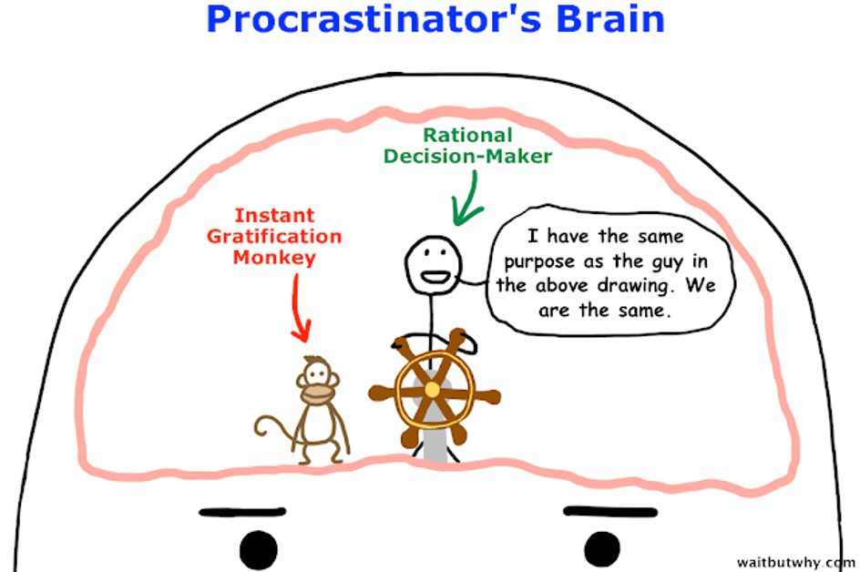
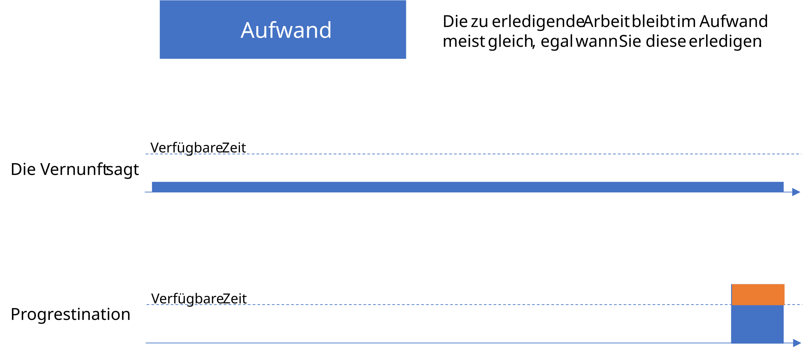
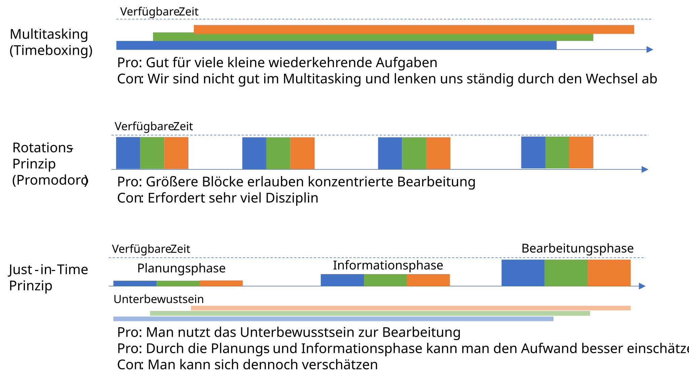

13a Relationale Datenbanken
Joern Ploennigs · AI4SC
Midjourney: Tabular Relief, ref. Ben Nicholson
Eine relationale Datenbank ist ein Datenbanksystem, das Informationen in Tabellen (Relationen) speichert, wobei die Daten als Tupel (Zeilen) organisiert sind und jede Spalte (Attribut) einen definierten Datentyp besitzt. ::: Wichtig ist außerdem die Unterscheidung zwischen Relationenschema und Relation: Das Schema beschreibt Struktur und Attribute einer Tabelle, die Relation ist die aktuelle Menge der Tupel. Für uns ist zentral: Tabellen setzen Entitäten und Beziehungen aus dem ER-Modell technisch um. Für Ingenieure bedeutet dies beispielsweise, dass Projektdaten, Materiallisten und Kostenkalkulationen in separaten, aber verknüpften Tabellen gespeichert werden können.
:::::
Relationale Datenbanken
Wie wird aus dem ER-Modell aus S12 eine echte Datenbank?
Relationale Datenbanken - Grundkonzepte
Aus S12 kennen wir bereits Entitäten, Attribute und Beziehungen. Jetzt geht es darum, daraus eine Datenbankstruktur zu machen, die sowohl fachlich korrekt als auch technisch überprüfbar ist.
Relationale Datenbank
Eine relationale Datenbank ist ein Datenbanksystem, das Informationen in Tabellen (Relationen) speichert, wobei die Daten als Tupel (Zeilen) organisiert sind und jede Spalte (Attribut) einen definierten Datentyp besitzt.
- Daten sind in Tabellenstrukturen (Relationenschemata) organisiert
- Formal ist eine Relation eine Teilmenge eines kartesischen Produkts von Wertebereichen
- Die Tabelle ist die technische Darstellung dieser Relation
- Eine relationale Datenbank ist eine Menge von Tabellen
- Jede Tabelle setzt einen Teil des ER-Entwurfs aus S12 um
| Spalte 1 | Spalte 2 | Spalte 3 |
|---|---|---|
| Zeile 1 | … | … |
| Zeile 2 | … | … |
Agentischer Workflow: Wenn AI eine Datenbankstruktur erzeugt, prüfe zuerst, ob jede geplante Entität wirklich als Tabelle auftaucht.
Vom ER-Modell zur Tabelle
S12: ER-Entwurf
- Entität Gemeinde
- Attribute:
GemeindeID,Name,Einwohner - Entität Bauwerk
- Attribute:
BauwerksID,Bauwerkstyp
S13: relationale Umsetzung
- Tabelle
gemeinden - Spalten
gemeinde_id,name,einwohner - Tabelle
bauwerke - Spalten
bauwerks_id,bauwerkstyp,gemeinde_id
Entitätsmengen werden meist zu Tabellen. Beziehungen erscheinen je nach Kardinalität als Fremdschlüssel oder als eigene Tabelle.
Beziehungen werden zu Fremdschlüsseln
Im ER-Modell
- Beziehung: Bauwerk gehört zu Gemeinde
- Kardinalität: viele Bauwerke pro Gemeinde
- Jede Beziehung braucht eine technische Umsetzung
In der relationalen Datenbank
bauwerke.gemeinde_idverweist aufgemeinden.gemeinde_id- Der Verweis ist ein Fremdschlüssel
- Die Kardinalität erscheint als Integritätsregel
Agentischer Workflow: Prüfe bei AI-generierten Tabellen immer, ob jede Beziehung aus dem ER-Modell als Fremdschlüssel vorhanden ist.
Relationale Datenbanken - Grundbegriffe
- Jede Tabelle hat einen Relationennamen (Tabellennamen)
- Relationenschema beschreibt Spaltennamen und Struktur
- Relation steht für die aktuelle Menge der Datentupel
- Jedes Tupel an Daten besteht aus einer Abfolge von Attributwerten (Einzelne Zeile)
- Reihenfolge und Bedeutung festgelegt durch Relationenschema
- Die Spalten müssen den Attributen aus dem ER-Modell entsprechen
| Attribut 1 | Attribut 2 | Attribut 3 |
|---|---|---|
| Attributwert | … | … |
| Attributwert | … | … |
Beispiel: OpenData Hanse-Stadt Rostock
Informationen sind meist über verschiedene Tabellen verteilt und müssen oft zusammengeführt verarbeitet werden, um daraus anwendbares Wissen abzuleiten.
- Beispiel: https://www.opendata-hro.de
- Bebauungspläne
- Gemeinden
- Baustellen
- Bodenrichtwerte
- Adressenliste
Schlüsselattribute
- Gewisse Attribute (Spalten) können als Schlüssel markiert werden
- Schlüssel sind meist eindeutig (unique) zuordenbar
- Sie existieren in der Tabelle nur einmal
- Man kann damit die Zeile (Tupel) identifizieren
- Zeilennummern eignen sich nicht (können gelöscht werden)
- Im ER-Modell sind diese Attribute meist schon als Identifikatoren erkennbar
Schlüsseltypen:
- Einzelnes Attribut oder Menge von Attributen
- Unique ID (UID) - häufig einzelnes Attribut
- Globally Unique IDs (GUID) - global eindeutig
- UUID (universally unique identifier)
Schlüsselattribute - Beispiel
Gemeinden Tabelle
| GemeindeID | Name | Einwohner |
|---|---|---|
| 1 | Dummerstorf | 7.329 |
| 2 | Graal-Müritz | 4.278 |
| 3 | Sanitz | 5.831 |
Kandidatenschlüssel hier: GemeindeID
Verweise über Schlüssel
Gemeinden Tabelle
| GemeindeID | Name | Einwohner |
|---|---|---|
| 1 | Dummerstorf | 7.329 |
| 2 | Graal-Müritz | 4.278 |
| 3 | Sanitz | 5.831 |
Primärschlüssel: GemeindeID
Bauwerke Tabelle
| BauwerksID | Bauwerkstyp | GemeindeID |
|---|---|---|
| 5000 | Tankstelle | 2 |
| 5001 | Hotel | 1 |
| 5002 | Kirche | 2 |
Fremdschlüssel: GemeindeID
Schlüsselkonzepte
- Die Schlüssel anderer Tabellen kann man nutzen, um auf Tupel in diesen zu verweisen
- Die Schlüssel anderer Tabellen heißen Fremdschlüssel (Foreign Key)
- Die Tabellen werden über Schlüssel in Beziehung gesetzt
- So wird der Entwurf aus S12 in Tabellenkonsistenz übersetzt
Der Fremdschlüssel verweist auf den Primärschlüssel in der anderen Tabelle
Die Rolle von Schlüsseln
Schlüssel definieren sogenannte Integritätsbedingungen:
Primärschlüssel
- Stehen für die Integrität der einzelnen Tabelle
- Lokale Integrität
Fremdschlüssel
- Stehen für die Integrität des gesamten Datenbanksystems
- Globale Integrität
Außerdem gilt: NULL ist kein normaler Fachwert. Wenn ein Attribut zwingend bekannt sein muss, braucht es zusätzlich NOT NULL.
Agentischer Workflow: Lies bei AI-SQL nicht nur die Tabellennamen. Prüfe, welche Integritätsbedingungen wirklich im
CREATE TABLEstehen.
AI erzeugt oft gültiges SQL
AI erzeugt häufig CREATE TABLE-Code, der syntaktisch korrekt ist, aber fachlich unvollständig bleibt.
Zum Vergleich zuerst ein bewusst einfaches, aber fachlich sauberes Beispiel:
Typische Lücken:
- fehlendes
NOT NULL - fehlendes
UNIQUE - fehlendes
CHECK - fehlende oder unpräzise
FOREIGN KEY-Definitionen
Die SQL-Datei sieht dann plausibel aus, setzt den ER-Entwurf aber nur teilweise um.
Review von AI-generiertem CREATE TABLE
Agentischer Workflow: Verifiziere systematisch:
- Alle Entitäten aus S12 werden zu Tabellen
- Alle Attribute werden zu passenden Spalten mit sinnvollen Datentypen
- Alle Beziehungen erscheinen als Fremdschlüssel
- Alle Kardinalitäten erscheinen als
NOT NULLoderUNIQUE
Nach dieser Prüfung kann in S13b mit SELECT auf einer belastbaren Struktur gearbeitet werden. Genau diese Verifikation ist auch ein Beispiel dafür, warum Zeitmanagement in wissensintensiven Aufgaben wichtig bleibt: Prüfen kostet Zeit, spart aber spätere Fehler.
Lesson Learned

Lessons Learned - Prokrastination

- Etwas Prokrastination ist normal und oft Teil des Arbeitslebens (folgt aus Priorisierung)
- Prokrastination ist sehr gefährlich, wenn wir den Aufwand falsch einschätzen und sich als größer herausstellt als die verfügbare Zeit
Lessons Learned - Zeitmanagement

Questions

Artificial
Intelligence